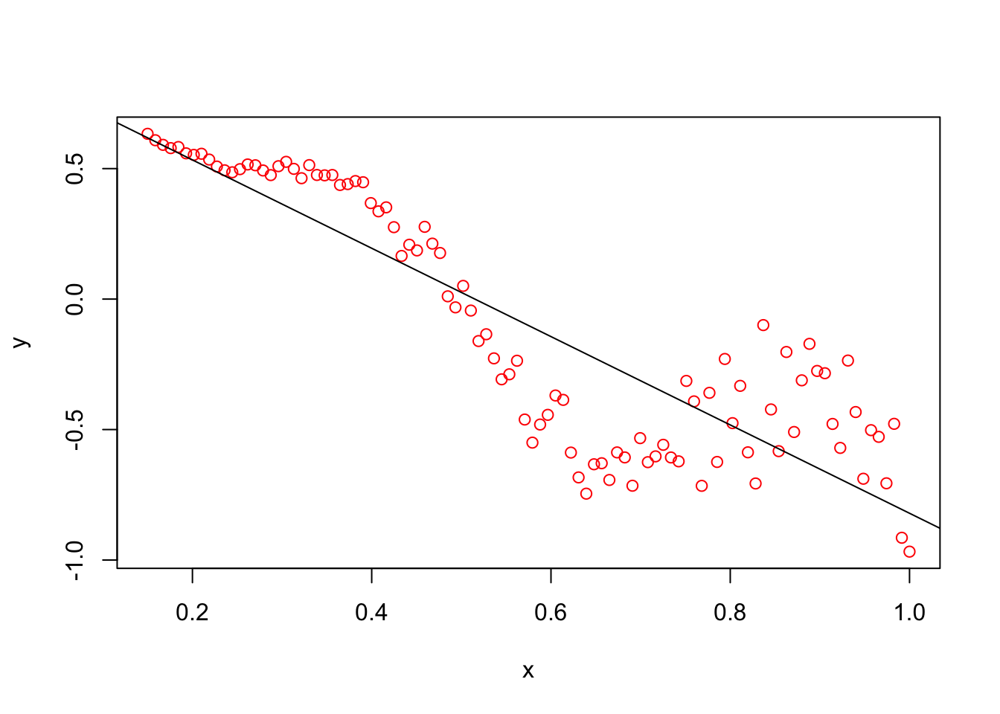
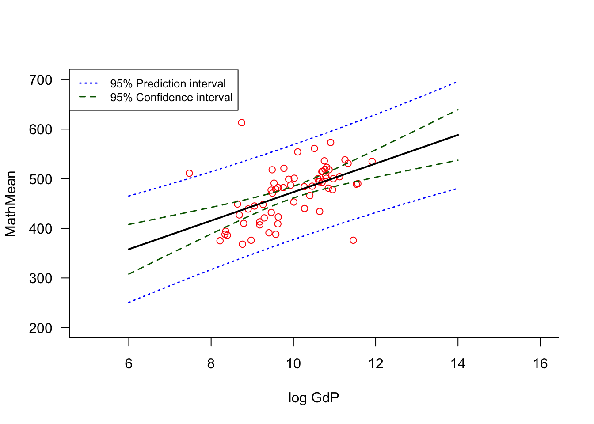
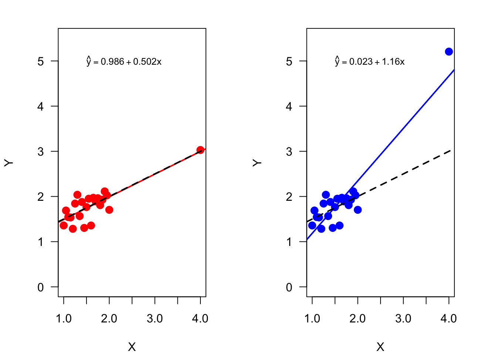
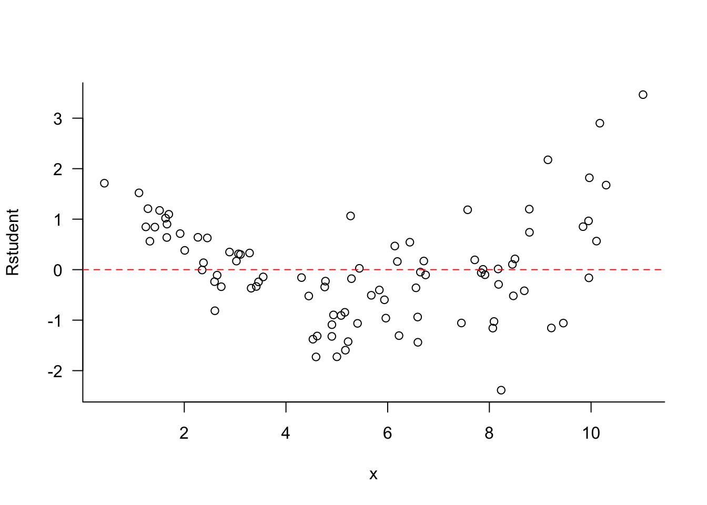
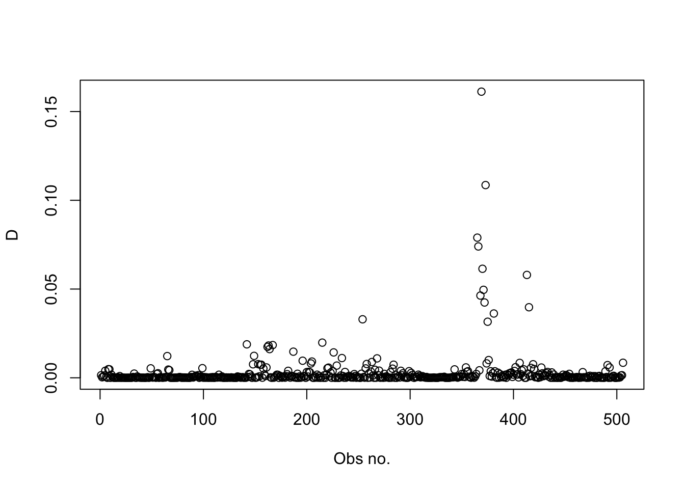
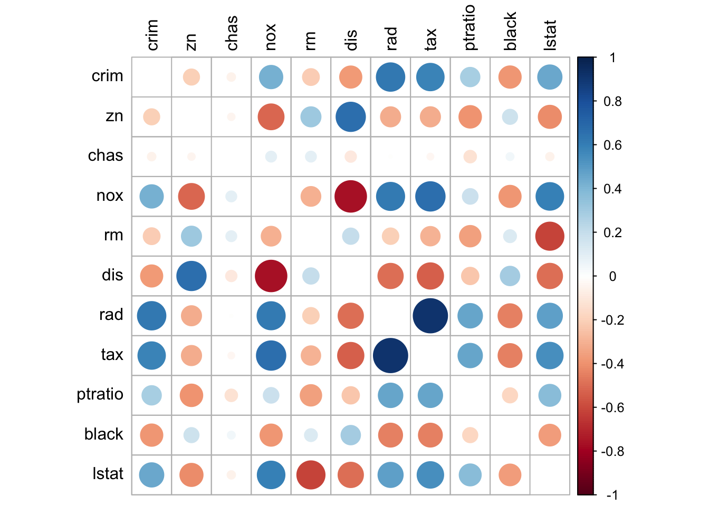

The classical (standard) linear model is \[
\textbf{Y}= \textbf{X}\boldsymbol{\beta}+ \boldsymbol{\epsilon}, \quad \quad \boldsymbol{\epsilon}\sim (\textbf{0},\sigma^2\textbf{I})
\]\(\textbf{Y}\) is an \((n \times 1)\) vector of target values, \(\textbf{X}\) is an \((n \times (p+1))\) matrix of \(p\) input variables plus an intercept, and \(\boldsymbol{\epsilon}\) is an \((n \times 1)\) random vector whose elements have mean zero and the same variance \(\sigma^2\). If \(\textbf{X}\) is of full rank, the OLS estimator \[
\widehat{\boldsymbol{\beta}} = \left(\textbf{X}^\prime\textbf{X}^{-1}\right) \textbf{X}^\prime\textbf{Y}
\] is the unbiased estimator with smallest variance. Predicted values and fitted residuals are given by
where \(\textbf{H}\) is the “Hat” matrix \(\textbf{H}= \textbf{X}(\textbf{X}^\prime\textbf{X})^{-1}\textbf{X}^\prime\).
The OLS estimator has variance \[
\text{Var}[\widehat{\boldsymbol{\beta}}] = \sigma^2 (\textbf{X}^\prime\textbf{X})^{-1}
\] We saw in Section 3.6 that \(\textbf{H}\) is an orthogonal projection matrix–it is symmetric and idempotent. Because \(\textbf{H}\) is a projection matrix, \(\textbf{I}- \textbf{H}\) is also a projection matrix. To emphasize this fact we can write \(\textbf{y}\) as the sum of two components \[
\textbf{y}= \textbf{H}\textbf{y}+ (\textbf{I}- \textbf{H})\textbf{y}
\] This identity simply states that the target variable is projected onto two spaces: the space generated by the columns of \(\textbf{X}\), represented by the projection matrix \(\textbf{H}\), and its complement (residual) space. Furthermore, these projections are orthogonal: \[
\textbf{H}(\textbf{I}- \textbf{H}) = \textbf{H}- \textbf{H}\textbf{H}= \textbf{H}- \textbf{H}= \textbf{0}
\]
Projection properties are useful in establishing properties of fitted values and residuals.
Several interesting facts can be gleaned from these expressions.
The first result, that the fitted residuals are orthogonal to the inputs, follows from the orthogonality of least squares, but can be shown easily using projection properties \[
\textbf{X}^\prime\widehat{\boldsymbol{\epsilon}} = \textbf{X}^\prime(\textbf{I}-\textbf{H})\textbf{y}= (\textbf{X}^\prime - \textbf{X}^\prime\textbf{H})\textbf{Y}= (\textbf{X}^\prime-\textbf{X}^\prime)\textbf{y}= \textbf{0}
\] The orthogonality of inputs and residuals implies that for any column in \(\textbf{X}\)\[
\sum_{i=1}^n \, x_{ij}\widehat{\epsilon}_i = 0, \quad j=1,\cdots, p
\] This is also true for the intercept column, so that \(\sum_{i=1}^n \widehat{\epsilon}_i = 0\); the fitted residuals sum to zero.
The variance of the \(i\)th fitted value depends on the irreducible variability \(\sigma^2\) and on the \(i\)th diagonal element of the Hat matrix, \(h_{ii}\). The Hat matrix in turn depends only on the input variables. In other words, the variability of the fitted values does not depend on any of the target values in the data set.
The variance of a fitted residual is \(\sigma^2(1-h_{ii})\). Since \(\sigma^2\) is the variance of the model errors (the irreducible variance), the variability of the residuals is smaller if \(h_{ii} > 0\). The leverages \(h_{ii}\) cannot be larger than 1, otherwise \(\sigma^2(1-h_{ii})\) is not a valid variance. In fact, the leverages are bounded \(1/n \le h_{ii} \le 1\).
7.1 Simple and Multiple Linear Regression
The SLR and MLR models are examples of the classical linear model. In the SLR case there is a single input variable \[
Y_i = \beta_0 + \beta_1 x_i + \epsilon_i
\] in the MLR case there are multiple input variables. These can be distinct variables, or transformations and/or combinations of variables. For example, \[
Y_i = \beta_0 + \beta_1 x_{i1} + \beta_2 x_{i2} + \beta_3 x_{i1}x_{i2} + \epsilon_i
\] has three inputs formed from the main effects of \(x_1\) and \(x_2\) and their interaction \(x_1x_2\). More on the use and interpretation of interactions below.
Computing Estimates
Example: Auto Data from ISLR
The Auto data is a data set used in James et al. (2021) (ISLR2). It comprises information on 397 automobiles, such as mileage (mpg), horsepower, number of cylinders, engine displacement (cu. inches), weight (lbs), etc. The following statements load the data set from DuckDB into a Pandas dataframe, drop records with missing values, and display the first observations.
import pandas as pdimport duckdb con = duckdb.connect(database="ads.ddb")auto = con.sql("SELECT * FROM auto").df().dropna()con.close()auto.head()
mpg cylinders displacement ... year origin name
0 18.0 8 307.0 ... 70 1 chevrolet chevelle malibu
1 15.0 8 350.0 ... 70 1 buick skylark 320
2 18.0 8 318.0 ... 70 1 plymouth satellite
3 16.0 8 304.0 ... 70 1 amc rebel sst
4 17.0 8 302.0 ... 70 1 ford torino
[5 rows x 9 columns]
Suppose we want to develop a model that predicts mpg from other variables. A multiple linear regression model with inputs cylinders, displacement, weight and horsepower is fit in Python with scikit-learn (sklearn) as follows.
from sklearn import linear_modelauto_x = auto[['cylinders', 'displacement', 'weight', 'horsepower']]auto_y = auto['mpg']# Create linear regression objectregr = linear_model.LinearRegression()# Fit the model, the intercept is added by default regr.fit(auto_x, auto_y)
LinearRegression()
In a Jupyter environment, please rerun this cell to show the HTML representation or trust the notebook. On GitHub, the HTML representation is unable to render, please try loading this page with nbviewer.org.
Coefficients of inputs:
[-3.93285431e-01 1.38893129e-04 -5.27717310e-03 -4.28124811e-02]
print("Coefficient of determination: %.2f"% regr.score(auto_x,auto_y))
Coefficient of determination: 0.71
auto_x and auto_y are the \(x\)-matrix and the \(y\) vector for the regression model. Note that an intercept is added automatically by the model training routine, so it is not provided in auto_x. After a linear regression object is created, the fit method is called to compute the OLS estimates. The predict method computes \(\widehat{\textbf{y}}\) and the result is used to compute the vector of residuals, \(\widehat{\boldsymbol{\epsilon}}\).
The remaining statements print the intercept, the regression coefficients for the input variables and the coefficient of determination, also known as the \(R^2\) statistic.
The regression model fit with the preceding statements is \[
\text{mpg}_i = \beta_0 + \beta_1\text{cylinders}_i+\beta_2\text{displacement}_i+\beta_3\text{weight}_i+\beta_4\text{horsepower}_i + \epsilon_{i}
\] and it is assumed that \(\epsilon_i \sim iid (0,\sigma^2)\). The OLS estimates are
\(\widehat{\beta}_0 = 45.756770\)
\(\widehat{\beta}_1 = -0.393285\)
\(\widehat{\beta}_2 = 0.0001388\)
\(\widehat{\beta}_3 = -0.005277\)
\(\widehat{\beta}_4 = -0.0428124\)
The predicted miles per gallon of an automobile for which the data frame is representative, is
scikit-learn computes the OLS estimates but does not provide standard errors or an estimate of \(\sigma^2\). These estimates of variability are necessary to compute \(p\)-values, confidence and prediction intervals, to test hypotheses, etc. The lack of uncertainty quantification is rooted in the algorithmic modeling approach that does not appeal to an underlying stochastic data-generating mechanism.
The estimate of \(\sigma^2\) and the standard errors of the regression coefficients can be calculated the hard way, by performing the matrix math. First, we augment the matrix of input variables with a column of 1s to reflect the intercept. The estimate of \(\sigma^2\) is based on the error (residual) sum of squares \[
\widehat{\sigma}^2 = \frac{\text{SSE}}{n-(p+1)} = \frac{1}{n-(p+1)}\sum_{i=1}^n\,\widehat{\epsilon}_i^2
\]
Using R, working with linear regression models is much simpler. Most R functions for statistical modeling support a formula expression to specify models directly based on information in data frames. You do not have to set up separate objects for \(\textbf{X}\) and \(\textbf{y}\). Also, R provides standard errors, \(t\)-statistics, \(p\)-values, and other estimates by default, and has default methods for handling missing values.
Call:
lm(formula = mpg ~ cylinders + displacement + weight + horsepower,
data = Auto)
Residuals:
Min 1Q Median 3Q Max
-11.5248 -2.7964 -0.3568 2.2577 16.3221
Coefficients:
Estimate Std. Error t value Pr(>|t|)
(Intercept) 45.7567705 1.5200437 30.102 < 2e-16 ***
cylinders -0.3932854 0.4095522 -0.960 0.337513
displacement 0.0001389 0.0090099 0.015 0.987709
weight -0.0052772 0.0007166 -7.364 1.08e-12 ***
horsepower -0.0428125 0.0128699 -3.327 0.000963 ***
---
Signif. codes: 0 '***' 0.001 '**' 0.01 '*' 0.05 '.' 0.1 ' ' 1
Residual standard error: 4.242 on 387 degrees of freedom
Multiple R-squared: 0.7077, Adjusted R-squared: 0.7046
F-statistic: 234.2 on 4 and 387 DF, p-value: < 2.2e-16
The Estimate column of the lm summary reports the \(\widehat{\beta}_k\) estimates, the Std. Error column reports their standard errors. These values match the Python computations above.
The residual standard error of 4.241859 is \(\widehat{\sigma}\), the square root of the estimator \(\widehat{\sigma}^2\) derived above.
Coefficient Interpretation
How do we interpret the regression coefficients of the fitted model
Since the model is linear, it is tempting to state that, for example, a change in 1 unit of displacement causes a change of 0.0001388 in miles per gallon. This interpretation is not correct, because
We cannot conclude causality between inputs and the target variable. The data are purely observational so we can at best state that changes in the input variables are associated with different predicted values for miles per gallon.
We cannot interpret one input variable in the absence of the others. The signs of the regression coefficients are somewhat counter-intuitive. Why would mileage go down for cars with more cylinders but go up with greater displacement. Does adding cylinders not imply a larger engine displacement? The point is that the inputs are related to each other, they do not vary freely from each other. When we interpret the magnitude of a regression coefficient in terms of the change in the target variable that corresponds to a unit change in the input variable, we are implicitly holding all other predictors fixed (ceteris paribus).
The correct interpretation of the displacement coefficient is thus when displacement increases by one cubic inch and all other attributes remain constant, the expected mileage increases by 0.0001388 miles per gallon.
Note
The all-other-variables-held-fixed interpretation is also important when interpreting hypothesis test results. The \(p\)-values of variables cylinders and displacement are 0.33 and 0.98, respectively, suggesting that these variables do not make significant contributions toward explaining miles per gallon. These \(p\)-values are interpreted in the presence of the other variables in the model. The correct interpretation is that the number of cylinders is not a significant predictor of miles per gallon in a model that accounts for engine displacement, vehicle weight, and horsepower.
\(R^2\), the Coefficient of Determination
The variability in the target \(\textbf{y}\), not accounting for any information provided by the input variables can be estimated as \[
s^2 = \frac{1}{n-1}\sum_{i=1}^n (y_i - \overline{y})^2
\] If the \(y_i\) had the same mean, this would be an unbiased estimator of \(\text{Var}[Y]\). However, the regression model states very clearly that the mean of \(Y\) is a function of the \(x\)-inputs. This estimator is then a biased estimator of \(\text{Var}[Y] = \sigma^2\). The numerator of \(s^2\) is called the total sum of squares (SST). If SST captures variability of \(Y\) about a constant mean, how much of this is attributable to the input variables? To answer this we can look at the variability not attributable to the \(x\)s, the error sum of squares \[
\text{SSE} = \sum_{i=1}^n \widehat{\epsilon}_i = \sum_{i=1}^n (y_i - \widehat{y}_i)^2
\] The ratio \[
R^2 = \frac{\text{SST}-\text{SSE}}{\text{SST}}=1-\frac{\text{SSE}}{\text{SST}}
\] is known as the coefficient of determination or R-square. The name R-square comes from a simple relationship between \(R^2\) and the Pearson correlation coefficient in the SLR case. If \(y_i = \beta_0 + \beta_1 x_i + \epsilon_i\), then \(R^2\) is the square of the correlation coefficient between \(X\) and \(Y\):
The squared correlation coefficient between mpg and horsepower is the same as the \(R^2\) statistic reported by lm.
You can compute the correlation coefficient between the two variables from simple linear regression output, but you need to take into account the sign of the regression coefficient. The correlation coefficient has the same sign as \(\beta_1\).
\(R^2\) ranges between 0 and 1; it achieves the lower bound \(R^2=0\) if SSE = SST, the input variables do not explain any variability in \(Y\). \(R^2 = 1\) results when SSE = 0, the model fits the data “perfectly”, it interpolates the \(y_i\).
The straightforward interpretation of \(R^2\) as the proportion of variability explained by the input variables unfortunately can lead one to chase models that have a high \(R^2\). This is a terrible practice for a number of reasons
The value of \(R^2\) does not tell us whether the model assumptions are met. You can explain a substantial amount of variability in the data with a seriously deficient model. For example, the four regressor model fit to the Auto data earlier has \(R^2 = 0.71\), explaining 71% of the variability in miles per gallon. A look at the residuals from that model shows that there is substantial trends in the residuals (Figure 7.1). Larger fitted values have larger variability and there is a definite trend in the residuals; the model is not (yet) correct.
Here is an example with simulated data where the mean function is not a straight line and the error variance depends on \(x\). A simple linear regression model is clearly not appropriate, but it explains more than 75% of the variability in \(y\).
x <-seq(0.15, 1, l =100)set.seed(123456)eps <-rnorm(n =100, sd =0.25* x^2)y <-1-2* x * (1+0.25*sin(4* pi * x)) + epsslr <-lm(y ~ x)plot(x,y,type="p",col="red")abline(slr$coefficients)

summary(slr)$r.squared
[1] 0.7694696
\(R^2\) is a function of SSE, the prediction error on the training data set. This can be made arbitrarily small by adding input variables. If \(R^2_{\text{cur}}\) is the coefficient of determination in a linear regression model, and you add a new predictor \(x_{p+1}\), then \[
R^2_{\text{new}} \ge R^2_{\text{cur}}
\] Predictors that make no relevant contribution will increase \(R^2\) because their addition reduces SSE.
A model that interpolates the data (fits “perfectly”) is not a good model. It is certainly not perfect if the goal is to build a model that generalizes well to unseen observations. Different metrics are needed to develop models that generalize and do not overfit the data. Chasing \(R^2\) values invariably leads to overfitting and models that memorize too much of the training observations to perform well on new data.
Measuring Prediction Error
Since we can make SSE on the training data arbitrarily small by adding more input variables, the MSPE on the training data is not a good metric if we want a model that performs well in predicting new observations. Instead of MSETr the test error MSETe should be used. As discussed in Section 2.5, the test error can be estimated by holding out some observations from training in a test data set or by cross-validation (Section 2.6).
In the classical linear model leave-one-out cross-validation is particularly appealing. In addition to not depending on any random selection of data points as test data sets or \(k\)-fold cross-validation do, LOOCV error can be calculated in the linear model without re-fitting the model \(n\) times. All the necessary pieces to compute the LOOCV error can be assembled on the same pass through the data that calculates the OLS estimates. The key is the Sherman, Morrison, Woodbury formula.
Sherman, Morrison, Woodbury Formula
This remarkable formula is at the heart of many regression-type diagnostics and cross-validation techniques. A version of this formula was first given by Gauss in 1821. Around 1950, it appeared in several papers by Sherman and Morrison, and Woodbury.
Suppose we are in a full-rank linear modeling context with design matrix \(\textbf{X}_{(n \times p + 1)}\), so that the inverse \(\left( \textbf{X}^\prime\textbf{X}\right)^{-1}\) exists. In diagnosing the quality of a model, we are interested in measuring the prediction error for the \(i\)th observation as if the data point had not contributed to the analysis. This is an example of a leave-one-out estimate: remove an observation from the data, redo the analysis, and measure how well the quantity of interest can be computed for the withheld observation.
If you do this in turn for all \(n\) observations, you must fit the model \(n + 1\) times, an overall fit to the training data with \(n\) observations, and \(n\) additional fits with training data sets of size \(n - 1\), leaving out each observation in turn. The computationally expensive part of fitting the linear model is building the cross-product matrix \(\textbf{X}^\prime\textbf{X}\) and computing its inverse \(\left( \textbf{X}^\prime\textbf{X}\right)^{-1}\).
The Sherman-Morrison-Woodbury formula allows us to compute the inverse of the cross-product matrix based on \(\left( \textbf{X}^\prime\textbf{X}\right)^{- 1}\) as if the \(i\)th observation had been removed.
Denote as \(\textbf{X}_{-i}\) the design matrix with the \(i\)th observation removed. Then
The quantities on the right hand side are available in the standard regression calculations based on \(n\) data points. Because of this remarkable result, leave-one-out statistics can be calculated easily—without retraining any models—based on the fit to the full training data alone.
Note
Note that the quantity in the denominator of the right-hand side is the diagonal value of \(\textbf{I}- \textbf{H}\), where \(\textbf{H}\) is the hat matrix. If \(h_{ii}\) denotes the diagonal values of \(\textbf{H}\), we can write the update formula as
The leverage values \(h_{ii}\) play an important role in the computation of residual, influence, and case-deletion diagnostics in linear models.
PRESS Statistic
If we denote the predicted value of \(y_i\), obtained in a regression without the \(i\)th observation, as \(\widehat{y}_{-i}\), then the leave-one-out residual \[
y_i - \widehat{y}_{-i}
\] is the test error for the \(i\)th observation. Using the Sherman-Morrison-Woodbury result, it is a neat exercise to show that this is simply \[
y_i - \widehat{y}_{-i} = \frac{y_i - \widehat{y}_i}{1-h_{ii}}
\] The leave-one-out error for the \(i\)th observation is obtained by dividing the \(i\)th residual by one minus the leverage value. When these deviations are squared and summed across the entire data set the PRESS statistic results \[
\text{PRESS} = \sum_{i=1}^n (y_i - \widehat{y}_{-i})^2 = \sum_{i=1}^n \left(\frac{y_i - \widehat{y}_i}{1-h_{ii}}\right)^2
\] The name is derived from prediction sum of squares. The average PRESS value estimates the mean square test error \[
\text{MSE}_{Te} = \frac{1}{n}\text{PRESS}
\]
Example: Auto Data (Cont’d)
For the four regressor model the PRESS statistic and the MSETe can be calculated by extracting the leverage values
You can validate this result the hard way by fitting \(n\) separate regression models, leaving one observation out each time and predicting that observation to obtain the PRESS residual.
PRESS <-0for (i in1:nrow(Auto)) { m <-lm(mpg ~ cylinders + displacement + weight + horsepower, data=Auto[-i,]) yhat_minus_i <-predict(m,newdata=Auto[i,]) PRESS <- PRESS + (Auto[i,"mpg"] - yhat_minus_i)^2}cat("MSE Test based on LOOCV: ", PRESS/nrow(Auto))
MSE Test based on LOOCV: 18.21061
Interactions
What is the difference between the following models
Both models depend on \(x_1\) and \(x_2\). In the first case the variables enter the model as main effects, that is, by themselves. Each input variable is allowed to make its contribution on the outcome given the presence of the other. The second model contains the additional interaction term \(x_1 x_2\). To be more precise, this is a two-way interaction term because it involves two input variables. A three-way interaction term would be \(x_1 x_2 x_3\).
Suppose that \(\beta_3\) is not zero, how should we interpret the presence of an interaction term in the model? We can no longer state that \(\beta_1\) measures the effect on the target variable when \(x_1\) is changed by one unit. The effect of changing \(x_1\) by one unit in the second model is now a function of \(x_2\). To see this, consider the mean of \(Y\) at two points, \(x_1\) and \(x_1+1\).
The difference between the two is \[
\text{E}[Y | x_1 + 1] - \text{E}[Y | x_1] = \beta_1 + \beta_3 x_2
\] The effect of \(x_1\) is now a function of \(x_2\). That is the very meaning of an interaction. The effect of one variable (or factor) depends on another variable (or factor) and vice versa. In the example the effect of \(x_1\) is a linear regression in \(x_2\).
Tip
When building models with interactions, it is customary to include lower-order effects in the model if higher-order effects are significant. For example, if \(x_1 x_2\) is in the model one includes the main effects \(x_1\) and \(x_2\) regardless of their significance. Similarly, if a three-way interaction is significant one includes the two-way interactions and the main effects in the model. The argument for doing so is that in order for two things to interact they must be present–otherwise, what interacts?
The presence/absence of an interaction between a categorical input variable and a numeric input variable can be seen by comparing the trends as in Figure 7.2. With a two-level categorical factor, representing for example, a treatment and a placebo, the absence of interactions manifests itself in parallel lines. The effect of the treatment is the distance between the two lines and is the same for all values of \(x_1\). Similarly, the effect of \(x_1\), the slope of the line, is the same for both groups. In the presence of an interaction the slopes are not the same and the distance between the lines (the effect of \(x_2\)) depends on the value for \(x_1\).
Figure 7.2: Models with a categorical and a continuous input with and without interactions.
Example: Auto Data (Cont’d)
We are now considering a series of model for the Auto data, based on the same four input variables used earlier.
The first four models add inputs and also two-way interactions of all inputs in the model. The formula expression y ~ (x1 + x2 + x3)^2 is a shorthand for including the main effects and two-way interactions of the three inputs. R displays the interaction terms as x1:x2, x1:x3, and x2:x3 in the output.
Models 5 and 6 then add up to three-way and four-way interactions, respectively. For each model we calculate the number of non-zero coefficients (the rank of \(\textbf{X}\)), SSE, \(R^2\) and the PRESS statistic.
The model complexity increases from the first to the sixth model; the models have more parameters and more intricate interaction terms. The SSE values decrease as terms are added to the model, and \(R^2\) increases accordingly. The PRESS statistic is always larger than the SSE, which makes sense because it is based on squaring the Press residuals \((y_i - \widehat{y}_i)/(1-h_{ii})\) which are larger than the ordinary residuals \(y_i - \widehat{y}_i\).
From the fifth to the sixth model only one additional parameter is added to the model, the four-way interaction of all inputs. \(R^2\) barely increases but the PRESS statistic increases compared to the model with only three-way interaction. Interestingly, none of the effects in the four-way model are significant given the presence of other terms in the model.
When testing hypothesis in statistical models it is useful to think of the hypothesis as imposing a constraint on the model. The test then boils down to comparing a constrained and an unconstrained model in such a way that we can make probability statements about the validity of the constraint. If it is highly unlikely that the constraint holds, we reject the hypothesis.
This principle applies to hypothesis testing in many model families, what differs is how the impact of the constraint on the model is measured. In least-squares estimation we look at how a sum of squares changes as the constraint is imposed. In models fit by maximum likelihood we measure how much the log likelihood changes when the constraint is imposed.
Suppose we have a model with four predictors, \[
Y = \beta_0 + \beta_1 x_1 + \beta_2 x_2 + \beta_3 x_3 + \beta_4 x_4 + \epsilon
\] and want to test the hypothesis that the absence of \(x_3\) and \(x_4\) does not make the model worse. The constraint we impose on the model is \[
H: \beta_3 = \beta_4 = 0
\] This is a hypothesis with two degrees of freedom, since two parameters of the model are constrained simultaneously.
Tip
You can usually figure out the degrees of freedom in a hypothesis by counting equal signs.
The unconstrained and constrained models are also called the full and the reduced models, respectively. In this case the full model is \[
Y = \beta_0 + \beta_1 x_1 + \beta_2 x_2 + \beta_3 x_3 + \beta_4 x_4 + \epsilon
\] and the reduced model is \[
Y = \beta_0 + \beta_1 x_1 + \beta_2 x_2 + \epsilon
\] :::{.definition} ::::{.definition-header} Definition: Nested Models :::: ::::{.definition-container} Two models are said to be nested when one model can be derived from the other by imposing constraints on the model parameters. The full and reduced models in the hypothesis testing context are nested models. On the contrary, if two models are not nested, the hypothesis testing framework described here does not apply. :::: :::
If based on the data the hypothesis cannot be rejected, we conclude that the full model is not significantly improved over the reduced model. The strength of evidence in favor of the hypothesis depends on how much variability is accounted for in the model when the constraint is relaxed, relative to the overall variability in the system. To measure that we need to introduce the idea of partitioning sums of squares.
Partitioning Variability through Sums of Squares
The difference between the total sum of squares, \(\text{SST} = \sum_{i=1}^n(y_i - \overline{y})^2\), which does not depend on the inputs, and the error sum of squares \(\text{SSE} = \sum_{i=1}^n (y_i - \widehat{y}_i)^2\), is the model sum of squares \[
\text{SSM} = \sum_{i=1}^n\left(\widehat{y}_i-\overline{y}\right)^2 = \widehat{\boldsymbol{\beta}}\textbf{X}^\prime\textbf{y}- n\overline{y}^2
\]
The total and model sums of squares are also called the corrected total and model sums of squares because they adjust for an overall estimate of the mean of \(Y\) if there are no inputs. In other words, they account for the intercept \(\beta_0\) in the model; \(\overline{y}\) is the estimate of \(\beta_0\) in an intercept-only model.
Another way of looking at SSM is as a measure of the combined contribution of \(\beta_1, \ldots, \beta_p\) beyond the intercept. The notation \[
\text{SSM} = SS(\beta_1, \cdots,\beta_p | \beta_0)
\] makes this explicit. We can now think of other sum of squares, for example, \(SS(\beta_3, \beta_4 | \beta_0, \beta_1, \beta_2)\) is the sum of squares contribution when \(\beta_3\) and \(\beta_4\) are added to a model that contains \(\beta_0, \beta_1\), and \(\beta_2\). Algebraically, \[
SS(\beta_3, \beta_4 | \beta_0, \beta_1, \beta_2) = SS(\beta_1, \beta_2, \beta_3, \beta_4 | \beta_0) - SS(\beta_1, \beta_2 | \beta_0)
\] This will be one part of measuring the strength of hypothesis \(H: \beta_3 = \beta_4 = 0\), the change in the model sum of squares between the full model with four inputs and the reduced model with two inputs However, there has to be more to it. If the data are very noisy, this change will have to be large to convince us of evidence against the hypothesis. If the data have small error variability, a smaller change in model sums of squares will suffice. This leads to considering the following test statistic: \[
F_{obs} = \frac{SS(\beta_3, \beta_4 | \beta_0, \beta_1, \beta_2) / 2}{\widehat{\sigma}^2}
\] Notice that the sum of squares in the numerator is divided by the degrees of freedom of the hypothesis. To find an estimator for the variance in the denominator we rely on SSE in the larger of the two models, the unconstrained model, because it is more likely to be an unbiased estimator of \(\sigma^2\).
Definition: Sum of Squares Reduction Test
Suppose that \(\text{SSE}_f\) and \(\text{SSE}_r\) are the error sum of squares in a full and reduced model where the reduced model is defined by a constraint \(H\) with \(q\) degrees of freedom imposed on the full model. The statistic \[
F_{obs} = \frac{(\text{SSE}_r - \text{SSE}_f)/q}{\text{SSE}_f/\text{dfE}_f}
\] follows an F distribution with \(q\) numerator and \(\text{dfE}_f\) denominator degrees of freedom if the model errors follow a Gaussian distribution, \(\boldsymbol{\epsilon}\sim G(\textbf{0},\sigma^2\textbf{I})\). \(\text{dfE}_f\) are the degrees of freedom associated with SSE in the full model, \(n-r(\textbf{X})_f\).
The sum of squares reduction test is very general and a very powerful tool to answer questions about the parameters in a linear model. However, in order to use any hypothesis testing framework that works with probability statements, a distributional assumption is required. We can always calculate \(F_{obs}\) between two models. Computing \(p\)-values, that is, the probability \(\Pr(F_{q,\text{dfE}_f} > F_{obs})\), is only valid if the data are normally distributed.
Caution
If you reject the hypothesis \(H\) based on a small \(p\)-value, you do not conclude that the full model is the correct model. You can say that there is significant evidence that the constraint can be relaxed. You might have compared a really bad model and a bad model.
Example: Auto Data (Cont’d)
To test the hypothesis that the coefficient for weight and horsepower are simultaneously zero in a model that accounts for cylinders and displacement, we can use the sum of squares reduction test.
Removing weight and horsepower from the four-predictor model increases the error sum of squares from 6963.43334 to 8342.56637. The F statistic for this reduction test is \(F_{obs} =\) 38.3234 and the \(p\)-value is very small (6.6613381^{-16}). We reject the hypothesis, the two-predictor model is not a sufficient model to explain mileage compared to the four-predictor model.
You can get to this result more quickly by using the anova function in R:
anova(lm_red, lm_full)
Analysis of Variance Table
Model 1: mpg ~ cylinders + displacement
Model 2: mpg ~ cylinders + displacement + weight + horsepower
Res.Df RSS Df Sum of Sq F Pr(>F)
1 389 8342.6
2 387 6963.4 2 1379.1 38.323 6.529e-16 ***
---
Signif. codes: 0 '***' 0.001 '**' 0.01 '*' 0.05 '.' 0.1 ' ' 1
Sequential and Partial Sums of Squares
The sum of squares reduction test is helpful to understand the difference between two important special types of sum of squares, sequential and partial ones. How do we measure the contribution an individual predictor makes to the model \[
Y = \beta_0 + \beta_1 x_1 + \beta_2 x_2 + \cdots + \beta_p x_p + \epsilon
\] Sequential sums of squares measures the contribution of an input relative to the inputs that precede it in the model. Partial sums of squares measure the contribution relative to all other inputs in the model. For example, if the input of interest is \(x_3\) in a four-regressor model, \[
SS(\beta_3 | \beta_0, \beta_1, \beta_2)
\] is the sequential sum of squares for \(x_3\) and \[
SS(\beta_3 | \beta_0, \beta_1, \beta_2, \beta_4)
\] is the partial sum of squares. \(\beta_4\) does not appear in the sequential sum of squares for \(x_3\) because it appears after \(\beta_3\) in the model formula. In other words, the sequential sum of squares for \(x_3\) does not adjust for \(x_4\) at all, while the partial sum of squares does. Clearly, the two types of sum of squares are not identical, unless the inputs are orthogonal (independent).
Sequential sum of squares have an appealing additive property, the overall model sum of squares can be accumulated from a series of sequential terms,
Partial sum of squares do not add up to anything meaningful, unless the inputs are orthogonal.
This raises an interesting question. If we divide a coefficient estimate by its standard error and compute a \(p\)-value from a \(t\)-distribution, what kind of hypothesis is being tested?
Example: Auto Data (Cont’d)
Here is the summary of the four-predictor model for mpg.
Call:
lm(formula = mpg ~ cylinders + displacement + weight + horsepower,
data = Auto)
Residuals:
Min 1Q Median 3Q Max
-11.5248 -2.7964 -0.3568 2.2577 16.3221
Coefficients:
Estimate Std. Error t value Pr(>|t|)
(Intercept) 45.7567705 1.5200437 30.102 < 2e-16 ***
cylinders -0.3932854 0.4095522 -0.960 0.337513
displacement 0.0001389 0.0090099 0.015 0.987709
weight -0.0052772 0.0007166 -7.364 1.08e-12 ***
horsepower -0.0428125 0.0128699 -3.327 0.000963 ***
---
Signif. codes: 0 '***' 0.001 '**' 0.01 '*' 0.05 '.' 0.1 ' ' 1
Residual standard error: 4.242 on 387 degrees of freedom
Multiple R-squared: 0.7077, Adjusted R-squared: 0.7046
F-statistic: 234.2 on 4 and 387 DF, p-value: < 2.2e-16
How do we interpret the \(p-\)-value of 0.337513 for the cylinders variable or the \(p\)-value of 0.987709 for the displacement variable? A two-sided \(t\)-test is equivalent to an F test with 1 numerator degrees of freedom where \(F_{obs}\) is the square of the \(t_{obs}\) statistic. Let’s first compute the sequential sum of squares tests and see if they match the \(p\)-values in the output.
The \(p\)-values are different from those shown in the lm output, so Pr(>|t|) = 0.987709 cannot have a sequential interpretation (adding displacement to a model that contains cylinders only). The \(p\)-values in the lm summary have a partial interpretation as seen by performing reduction tests between the following reduced models and the full model with four predictors:
Analysis of Variance Table
Model 1: mpg ~ displacement + weight + horsepower
Model 2: mpg ~ cylinders + displacement + weight + horsepower
Res.Df RSS Df Sum of Sq F Pr(>F)
1 388 6980.0
2 387 6963.4 1 16.592 0.9221 0.3375
anova(lm_nodis,lm4)
Analysis of Variance Table
Model 1: mpg ~ cylinders + weight + horsepower
Model 2: mpg ~ cylinders + displacement + weight + horsepower
Res.Df RSS Df Sum of Sq F Pr(>F)
1 388 6963.4
2 387 6963.4 1 0.004276 2e-04 0.9877
anova(lm_nowgt,lm4)
Analysis of Variance Table
Model 1: mpg ~ cylinders + displacement + horsepower
Model 2: mpg ~ cylinders + displacement + weight + horsepower
Res.Df RSS Df Sum of Sq F Pr(>F)
1 388 7939.2
2 387 6963.4 1 975.72 54.227 1.085e-12 ***
---
Signif. codes: 0 '***' 0.001 '**' 0.01 '*' 0.05 '.' 0.1 ' ' 1
anova(lm_nohp ,lm4)
Analysis of Variance Table
Model 1: mpg ~ cylinders + displacement + weight
Model 2: mpg ~ cylinders + displacement + weight + horsepower
Res.Df RSS Df Sum of Sq F Pr(>F)
1 388 7162.5
2 387 6963.4 1 199.12 11.066 0.0009633 ***
---
Signif. codes: 0 '***' 0.001 '**' 0.01 '*' 0.05 '.' 0.1 ' ' 1
The \(p\)-values of the partial reduction F-tests are identical to those for the \(t\)-tests in the lm output. The \(F_{obs}\) statistics are the squared values of the \(t_{obs}\) statistics.
On the other hand, if you ask for the analysis of variance on the full model with the aov function, you get sequential tests of the inputs.
To obtain the fitted values in the linear model \(\textbf{Y}= \textbf{X}\boldsymbol{\beta}+ \boldsymbol{\epsilon}\) we apply the OLS estimates and get \[
\widehat{\textbf{y}} = \textbf{X}\widehat{\boldsymbol{\beta}}
\] To predict at a previously unobserved value of the inputs, a new observation \(\textbf{x}_0\), we apply the regression equation and the OLS estimates to \(\textbf{x}_0\): \[
\widehat{\textbf{y}}_0 = \textbf{x}_0^\prime \widehat{\boldsymbol{\beta}}
\]
This seems simple, there must be a trick to it. The “trick” lies in the question: what is being predicted?
The target of the prediction (the what) can be \(Y\), the target variable, or \(\text{E}[Y]\), the mean of the target variable. How are these different? \(Y\) is a random variable and \(\text{E}[Y]\) is a constant; \(\text{Var}[Y] = \sigma^2\) and \(\text{Var}[\text{E}[Y]] = 0\). The uncertainty in predicting an individual observation and predicting the mean fucntion will differ. The former has to take into account the inherent variability \(\sigma^2\) in the data.
How are the predicted values themselves different?
For illustration, cosnider an SLR model \(Y = \beta_0 + \beta_1x + \epsilon\). To predict \(Y\) at \(X=x_0\) we choose the obvious expression \[
\widehat{Y}_0 = \widehat{\beta}_0 + \widehat{\beta}_1x_0 + \widehat{\epsilon}
\] substituting estimates for all unknowns on the right hand side. Since \(\epsilon\) is a zero-mean random variable and cannot be observed directly, the best estimate is \(\widehat{\epsilon} = 0\) which leads to \[
\widehat{Y}_0 = \widehat{\beta}_0 + \widehat{\beta}_1x_0
\]
That is the same expression we use to predict \(\text{E}[Y] = \beta_0 + \beta_1 x_0\), substituting the OLS estimates for unknowns on the right hand side: \[
\widehat{\text{E}}[Y_0] = \widehat{\beta}_0 + \widehat{\beta}_1x_0
\] And therein lies the crux. The predicted values for an observation and for the mean of an observation are the same. But their variability is not the same. We need to be very clear about what it is we are shooting for. More frequently one is interested in predicting observations, not averages of observations. In a study of health outcomes over time you might be more interested in predicting how a patient does at time \(t\), rather than how the population of patients does on average at time \(t\). Yet when folks see the different levels of confidence we have in the two predictions, they wish they could make predictions for the average.
Prediction Variance
The variance of \(\widehat{\text{E}}[Y_0] = \textbf{x}_0^\prime\widehat{\boldsymbol{\beta}}\) is straightforward and depends only on the variance of \(\widehat{\boldsymbol{\beta}}\): \[
\text{Var}{\widehat{\text{E}}[Y_0]} = \sigma^2 \, \textbf{x}_0^\prime(\textbf{X}^\prime\textbf{X})^{-1}\textbf{x}_0
\] To account for the variability in the data, the proper variance to consider when predicting an individual observation is \[
\text{Var}[\widehat{Y}_0 - Y_0] = \text{Var}[\widehat{Y}_0 - \epsilon] = \text{Var}[\textbf{x}_0^\prime\widehat{\boldsymbol{\beta}}-\epsilon] = \sigma^2\left(1+\textbf{x}_0^\prime(\textbf{X}^\prime\textbf{X})^{-1}\textbf{x}_0\right)
\]
The additional \(1+\) does not seem like a big deal but has substantial numeric consequences.
Confidence and Prediction Intervals
When the errors have a Gaussian distribution, the following random variables have \(t\) distributions with \(n-r(\textbf{X})\) degrees of freedom:
\[\begin{align*}
t &= \frac{\widehat{Y}_0 - \text{E}[Y]_0}{\sqrt{\text{Var}[\widehat{Y}_0]} \\
t &= \frac{\widehat{Y}_0 - Y_0}{\sqrt{\text{Var}[\widehat{Y}_0]-Y_0} \\
\end{align*}\]
The first is used to construct \((1-\alpha)\)-level confidence intervals for the mean of the target \[
\widehat{y}_0 \pm t_{\frac{\alpha}{2},n-(p+1)} \sqrt{\sigma^2 \textbf{x}_0^\prime(\textbf{X}^\prime\textbf{X})^{-1}\textbf{x}_0}
\] The second is used to construct \((1-\alpha)\)-level prediction intervals for an individual target \[
\widehat{y}_0 \pm t_{\frac{\alpha}{2},n-(p+1)} \sqrt{\sigma^2 \left(1+ \textbf{x}_0^\prime(\textbf{X}^\prime\textbf{X})^{-1}\textbf{x}_0 \right)}
\]
Example: PISA OECD Study
PISA (Program for International Student Assessment) is an OECD study in 65 countries to evaluate the performance of 15-year old students in math, science, and reading. Among the questions the study is trying to address is whether the educational level in a country is influenced by economic wealth, and if so, to what extent.
Both types of intervals are most narrow near the center of the \(x\) data range and widen toward the edges. A prediction outside of the hull of the data will be much less precise than a prediction near the center of the data. The additional variance term that distinguishes the variance of \(\widehat{y}_0\)\(\widehat{y}_0 - y_0\) has a considerable effect; the prediction intervals are much wider than the confidence intervals (Figure 7.3).

Figure 7.3: 95% prediction and confidence intervals.
7.4 Diagnostics
Model diagnostics are useful to examine model assumptions and to decide whether the model is an adequate description of the data. Questions we would like to answer through model diagnostics include
Are the assumptions of the model met?
Linearity (zero mean errors, \(\text{E}[\boldsymbol{\epsilon}] = \textbf{0}\))
Independence of the errors \(\text{Cov}[\epsilon_i, \epsilon_j] = 0\)
Can we assume that the errors are normally distributed?
How well does the model predict new observations?
Do observations have undue influence on the results?
Does the relationship between the inputs negatively affect the analysis?
The three basic types of linear model diagnostics are
Residual diagnostics to examine linearity, equal variance assumptions, and to detect outliers. Residual analysis relies on functions of \(y_i - \widehat{y}_i\) to study the behavior of the unobservable \(\epsilon_i\).
Case-deletion diagnostics find data points that exert high influence on the analysis. These diagnostics ask how an aspect of the analysis (variability, predicted values, coefficient estimates, …) changes if an observation is removed from the analysis.
Collinearity diagnostics examine the relationships among the inputs and whether they impact the analysis in a negative way. The situations at the end of the extremes include completely orthogonal inputs (\(\textbf{X}^\prime\textbf{X}\) is a diagonal matrix) and inputs that are linear combinations of each other (\(\textbf{X}^\prime\textbf{X}\) is non-singular and a unique OLS solution does not exist). Most applications fall in-between unless one or more inputs are factors.
Leverage
Linear model diagnostics depend on the leverage values \(h_{ii}\), the diagonal values of the Hat matrix \(\textbf{H}\). That is not surprising because the fitted values are linear combinations of the entries in the Hat matrix \[
\widehat{\textbf{y}} = \textbf{H}\textbf{y}
\] The \(i\)th fitted value is a linear combination of the entries in the \(i\)th row of \(\textbf{H}\) with the elements of \(\textbf{y}\)\[
\widehat{y}_i = \textbf{x}_i^\prime\widehat{\boldsymbol{\beta}} = \sum_{j=1}^n h_{ij}y_j
\]
From the last expression it is easy to establish that \[
\text{Var}[\widehat{y}_i] = \sigma^2 \, \textbf{x}_i^\prime(\textbf{X}^\prime\textbf{X})^{-1}\textbf{x}_i = \sigma^2 h_{ii}
\]
We can think of the leverages \(h_{ii}\) as standardized squared distance measures that tell us how far the \(i\)th data point is from the center of the \(x\)-data.
It is illustrative to look at the mean of the variances of the fitted values across the data set, \[
\frac{1}{n}\sum_{i=1}^n \text{Var}[\widehat{y}_i] = \frac{1}{n} \sum_{i=1}^n \sigma^2h_{ii} = \sigma^2\left(\frac{p+1}{n}\right)
\] The last result follows because \(\textbf{H}\) is a projection matrix and thus \(tr(\textbf{H})\) equals its rank, \(p+1\).
What does that result tell us about the precision of the estimated regression output? Suppose \(p=4\) and \(n=10\). The average variance is then \(\sigma^2/2\). When \(p=4\) and \(n=1000\), the average variance is \(\sigma^2/200\). As sample size increases, more precise estimates result as \(p\) remains fixed. As \(p\) increases for a given sample size, the average variance of the fitted values increases. In high-dimensional problems, where \(p\) is large, OLS estimates have high variability and are unstable. Regularized estimation methods such as Ridge or Lasso regression can perform better in those circumstances.
Since \(\sum_{i=1}^n h_{ii} = p+1\), the average leverage value in the data is \((p+1)/n\), and a good threshold for high leverage points is \(h_{ii} > 2(p+1)/n\). This is not necessarily a problematic data point, it simply states that the point is an outlying point in the \(x\)-space. High leverage points have the potential to influence aspects of the analysis, to be highly influential data points. More on this below.
In summary, here are some important results involving the leverage values \(h_{ii}\):
\(\frac{1}{n} \le h_{ii} \le 1\). This holds only for the \(n\) training observations, the leverage \(\textbf{x}_0^\prime(\textbf{X}^\prime\textbf{X})^{-1}\textbf{x}_0\) of a new data point is not bounded in this way.
\(\overline{h} = (p+1)/n\); high leverage points are those for which \(h_{ii} > 2(p+1)/n\).
\(\widehat{y}_i = \sum_{j=1}^n h_{ij}y_j\), the \(i\)th fitted value is a linear combination of the target values with the values in the \(i\)th row of \(\textbf{H}\).
\(\sum_{j=1}^n h_{ij} = 1\), the sum of the leverage values in the \(i\)th row of \(\textbf{H}\) is 1. Since the leverage values are bounded, they sum to 1 within a row, and the fitted values are linear combinations of \(\textbf{H}\), this shows how a data point with \(h_{ii} \approx 1\) has outsize influence. The fitted value is almost entirely determined by the input values of that observation.
Example: Same Leverage–Different Influence
This simulation demonstrates the concept of high leverage points with and without high influence. Data are simulated under the model \[
Y = \beta_0 + \beta_1 x + \epsilon
\] with \(\epsilon \sim G(0,0.25^2), \beta_0 = 1, \beta_1 = 0.5\). The design points for the input variable are spread evenly from 1 to 2, and a high leverage point is added at \(x=4\). There are 22 observations, so the threshold for a high leverage point is \(2(p+1)/n = 2*2/22 = 0.18\).
Two data sets are simulated. One in which the target value at \(x=4\) concurs with the mean function, one in which the target value is unusually high.
The fitted linear regressions are quite different. The parameter estimates in the first model, where \(y|x=4\) is not unusual are close to the true values \(\beta_0 = 1, \beta_1 = 0.5\). In the second regression the parameter estimates are very different from the true values, the estimates are biased.
The leverage values in both models are identical, since they depend only on the \(x\)-data. The data point at \(x=4\) has high leverage, its value of 0.7671 exceeds the threshold considerably. No other data point has high leverage.
Figure 7.4 displays the data and fitted regressions for the two data sets. Although \(x=4\) is a high leverage point, it has no undue influence on the estimated regression in the left panel. In the right panel, the high leverage point is a highly influential point due to its unusual \(y\)-value. The data point exerts its leverage by pulling the estimated regression towards it.

Figure 7.4: A data point with high-leverage at \(x=4\) has little influence in one analysis and is highly influential in another analysis depending on its \(y\)-value. The dashed line is the true mean function.
Residual Diagnostics
Basic questions about the correctness of the model revolve around the properties of \(\boldsymbol{\epsilon}\). The usual assumption \(\boldsymbol{\epsilon}\sim (\textbf{0}, \sigma^2\textbf{I})\) states that the errors have zero mean, are uncorrelated, and have equal variance. Although \(\boldsymbol{\epsilon}\) is unobservable, we should be able to check those assumptions by looking at the OLS residuals of the fitted model, \(\widehat{\boldsymbol{\epsilon}} = \textbf{y}- \widehat{\textbf{y}}\). These are also called the raw residuals.
Unfortunately, the properties of \(\widehat{\boldsymbol{\epsilon}}\) match the properties of \(\boldsymbol{\epsilon}\) only partially. Because \(\widehat{\boldsymbol{\epsilon}}\) is the result of fitting a model to data, the fitted residuals obey constraints that do not affect the model errors \(\boldsymbol{\epsilon}\). Because \[
\textbf{X}^\prime \widehat{\boldsymbol{\epsilon}} = \textbf{X}^\prime (\textbf{I}-\textbf{H})\textbf{y}= \textbf{0}
\] the raw residuals sum to zero across each column of the \(\textbf{X}\) matrix. In other words, there are only \(n-r(\textbf{X})\) degrees of freedom in the raw residual vector. From a statistical perspective, the residuals have zero mean, \(\text{E}[\widehat{\boldsymbol{\epsilon}}] = \textbf{0}\) and share this property with the model errors. The variance of \(\boldsymbol{\epsilon}\) and \(\widehat{\boldsymbol{\epsilon}}\) is different, however:
While the model errors are uncorrelated, the fitted residuals are correlated, \(\textbf{I}- \textbf{H}\) is not a diagonal matrix. The fitted residuals also do not have the same variance; the variance depends on the leverage of the \(i\)th data point.
These properties (or lack thereof) should give pause in using the raw residuals to diagnose the assumptions of equal variance or uncorrelated errors. Instead, residual diagnostics use transformations of the raw residuals.
Studentized residuals
The unequal variance of the residuals can be handled by standardizing, dividing the residual by its standard deviation (the square root of its variance) \[
\frac{\widehat{\epsilon}_i}{\sigma\sqrt{1-h_{ii}}}
\]\(\sigma\) is unknown and the obvious solution is to substitute an estimator. Statisticians refer to this process, using an estimate to scale a random variable, as studentization. The studentized residual is thus \[
r_i = \frac{\widehat{\epsilon}_i}{\widehat{\sigma}\sqrt{1-h_{ii}}}
\] The usual estimator for \(\sigma\) is the square root of the estimator of \(\sigma^2\), \[
\widehat{\sigma} = \sqrt{ \frac{\text{SSE}}{n-r(\textbf{X})}}
\]
R-student residuals
A further adjustment can be made to the studentized residuals. Rather than use an estimate of the variance that is derived from all the data, an estimator can be used that does not depend on the \(i\)th observation. This technique is called external studentization in contrast to the internal studentization that gives rise to \(r_i\).
Fortunately such an external estimate of the variance \(\sigma^2\) that does not rely on the \(i\)th observation can be computed based on the analysis of all \(n\) observations. Not surprisingly, as with PRESS residuals discussed earlier, the leverage plays a role again: \[
\widehat{\sigma}^2_{-i} = \frac{(n-r(\textbf{X}))\widehat{\sigma}^2 - \frac{\widehat{\epsilon}^2_i}{1-h_{ii}}}{n-r(\textbf{X})-1}
\] The externally studentized residual is called the R-student residual, \[
t_i = \frac{\widehat{\epsilon}_i}{\widehat{\sigma}_{-i}\sqrt{1-h_{ii}}}
\] Since \(\widehat{\epsilon}_i\) and \(\widehat{\sigma}_{-i}\) are independent, \(t_i\) behaves like a \(t\)-distributed random variable. The R-student residuals are good diagnostics to detect outliers and high-influence points (hips). Outliers are observations unusual in \(y\)-space. They are not necessarily hips, unless they are also high leverage points (see the previous example).
The \(t_i\) work well for outliers and hips because an outlier has large \(\widehat{\epsilon}_i\) and a hip has small \(\sqrt{1-h_{ii}}\). Both effects increase the value of \(t_i\). This is also true for the (internally) studentized residual. In addition, outliers or hips will have a large \[
\frac{\widehat{\epsilon}^2_i}{1-h_{ii}}
\] the adjustment term in the computation of \(\widehat{\sigma}^2_{-i}\). For those data points \(\widehat{\sigma}^2_{-i} < \widehat{\sigma}^2\) and \(t_i\) will be more sensitive than \(r_i\).
You can obtain all three sets of residuals easily in R:
The residual vector returned on the lm return object contains the \(\widehat{\epsilon}_i\).
The rstandard() function returns the studentized residuals \(r_i\) (unfortunate function name)
The rstudent() function returns the R-student residuals \(t_i\)
When testing model assumptions such as linearity, equal variance (homoscedasticity), and checking for outliers, the R-student residuals are the preferred quantities. The threshold \(|r_i| > 2\) is often applied to indicate outlying observations.
Example: Boston Housing Values
To demonstrate residual analysis in a linear model we use the Boston housing data that is part of the MASS library in R. The data set comprises 506 observations on the median value of owner-occupied houses (medv in $000s) in Boston suburbs and 13 variables describing the towns and properties.
The following statements fit a multiple linear regression model to predict median home value as a function of all but two inputs. The formula syntax medv ~ . requests to include all variables in the dataframe as inputs. medv ~ . -indus -age requests inclusion of all inputs except indus and age.
library(MASS)
Attaching package: 'MASS'
The following object is masked from 'package:ISLR2':
Boston
fit <-lm(medv ~ . - indus - age, data=Boston)summary(fit)
All 11 input variables are significant in this model; it explains 74% of the variability in median home values.
A plot of the R-student residuals against the observation number helps to identify outlying observations. Observations with \(t_i\) values outside the [-2, +2] interval are outliers. The plot also shows whether the equal variance assumption is reasonable; if the assumption is met the residuals show as a band of equal width.
A plot of the residuals against leverage shows observations that are unusual with respect to \(y\) (large absolute value of the residual), with respect to \(x\) (large leverage), or both. A high leverage point that is also an outlier is a highly influential data point.
In a simple linear regression model you can plot the residuals against the input \(x\). In a multiple linear regression model (or a SLR) you plot the residuals against the fitted values. The residuals should display no obvious trend against \(\widehat{y}\).
When plotting the residuals against the fitted value, add the predictions from a smoothing spline or other nonparametric model to identify trends in the residuals. Ideally, the smoothing spline should not show any gross departures from a flat line at zero.
The following plot raises concerns. We might not have the right set of inputs. Inputs might need to be transformed or additional/different terms are needed in the model, for example, interactions between the inputs.
It is tempting to create plots comparing residuals against the values of the input variables. This is meaningful in a simple linear regression with one input and can help suggest transformations of \(X\) to achieve linearity and help diagnose heteroscedasticity.
In the following example, the variance of \(Y\) increases with the value of \(X\) and the relationship between \(Y\) and \(X\) is a second-degree polynomial.
set.seed(543)x <-seq(1,10,0.1) x <- x +rnorm(length(x),0,1)mn <-2-0.5*x +0.3*x^2y <-rnorm(n=length(x), mean=mn, sd=sqrt(x))lfit <-lm(y ~ x)ri <-rstudent(lfit)plot(x,ri,ylab="Rstudent",las=1,bty="l")abline(h=0,col="red",lty="dashed")

The plot of the Rstudent residuals shows the increasing variability in \(x\) and a systematic quadratic trend in the residuals.
In a multiple linear regression (MLR) model it is tempting to create plots such as the previous one for all input variables. Unfortunately, such plots can be misleading because in an MLR model values of one input are changing with the values of other inputs. A way around this problem seems to be a plot of residuals versus the fitted values \(\widehat{y}_i\) but that is not an optimal solution either; this plot does not tell us anything about the \(X\)s that could be transformed to improve the model. It mushes together the contributions of all inputs.
So, how can we diagnose whether \(X_j\) needs to be transformed to account for non-linearity and visualize the relationship in such a way that accounts for the other inputs in the model? The answer is the partial regression plot, also known as the added-variable plot.
Suppose we partition the \(\textbf{X}\) matrix of the MLR model as follows \[
\textbf{X}= [\textbf{X}_{-j}, \textbf{x}_j]
\] so that \(\textbf{X}_{-j}\) contains all inputs (including the intercept) except for the \(j\)th input. Now consider two new regression models:
Regress \(\textbf{y}\) on \(\textbf{X}_{-j}\). Denote the residuals from this regression as \(\textbf{e}_{y,-j}\)
Regress \(\textbf{x}_j\) on \(\textbf{X}_{-j}\). Denote the residuals from this regression as \(\textbf{e}_{x,-j}\)
The added variable plot for input \(j\) displays \(\textbf{e}_{y,-j}\) on the vertical axis and \(\textbf{e}_{x,-j}\) on the horizontal axis.
Example: Auto (Cont’d)
For the four-regressor model in the Auto example, added-variable plots can be constructed with the avPlots() function in the car package.
Take the scatter of points in an added variable plot. This is a regression through the origin (a no-intercept) model of the form \[
\textbf{e}_{y,-j} = \beta_j \, \textbf{e}_{x,-j} + \boldsymbol{\epsilon}^*
\]
Using \(\beta_j\) to denote the slope in this regression is no accident. The estimate of \(\beta_j\) in this regression is the same as the estimate in the multiple linear regression model.
The added-variable plot is a visual representation of how \(X_j\) fares in the \(p\)-input model even if we are looking only at a two-dimensional plot. The partial regressions show the effect of \(X_j\) on \(y\) as if it was added last to the model. If the residual point scatter in the added-variable plot suggests nonlinearity, a transformation of \(X_j\) is in order.
Inputs that are highly significant in the multiple linear regression model will have a tight point cloud in the added-variable plot. Inputs that are correctly specified in the model will show non-systematic scatter of the points around the line. Note that we are not looking for horizontal point clouds in the added-variable plots, because the points are arranged around a non-zero line, its slope corresponds to the coefficient estimate.
Case Deletion Diagnostics
Case deletion diagnostics express how much an aspect of the model changes when an observation is removed from the analysis. The RStudent residual is a leave-one-out diagnostic in this spirit, as it uses an estimator of \(\sigma\) that does not incorporate the \(i\)th data point.
The two most important case deletion diagnostics are Cook’s D and the DFFITS. The name DFFITS stands for difference in fit, standardized. The statistic measures the change in predicted value in units of standard errors when the \(i\)th observation is deleted. We are concerned when a DFFIT exceeds \(2\sqrt{(p+1)/n}\).
The Cook’s D (“D” for distance) statistic measures the change in the parameter estimates \(\boldsymbol{\beta}\) when the \(i\)th observation is removed. If the purpose of modeling is to build a model that predicts well, focus more on DFFITS. If the purpose of modeling is to test hypotheses, then focus more on Cook’s D. We are concerned if the D statistic exceeds 1.
Cook’s D
Computing Cook’s D for our model is easy:
D <-cooks.distance(fit)D[which.max(D)]
369
0.1612148
D[which(D >0.1)]
369 373
0.1612148 0.1085777
There are no data points with a D > 1. We conclude that there are no data points that unduly influence the regression coefficients.
A plot of the D statistic against the observation number shows that there is a group of data points with much higher values of the D statistic. This group also coincides with larger residuals in the previous plots.
plot(D, xlab="Obs no.")

Here are the observations with the larger D values
The same group of observations with high D values has also high DFFITs. Contrary to the D values, the observations exceed the threshold for the DFFITs. We conclude that the data points are not influential on the regression coefficient estimates, but they are influential on the predicted values. If the model is used to predict median home values, we should consider refining the model or excluding the outlying observations and refitting.
Collinearity Diagnostics
When inputs are related to each other it has two important consequences
we cannot interpret the regression coefficient for one input without considering the other inputs
with increasing dependence among the inputs, the least squares estimation procedure becomes increasingly numerically unstable.
The condition when inputs are linearly related is called collinearity and it negatively affects any calculations that involve the \((\textbf{X}^\prime\textbf{X})^{-1}\) matrix (which is about all the calculations.)
The extreme case is when an input variable is linear combination of other inputs, for example \[
Z = aX_2 + bX_3
\] Adding \(Z\) to a model that contains inputs \(X_2\) and \(X_3\) leads to a singular (rank-deficient) \(\textbf{X}\) matrix. The inverse cross-product matrix \((\textbf{X}^\prime\textbf{X})^{-1}\) does not exist and the OLS estimator cannot be computed. Software uses instead a generalized inverse matrix \((\textbf{X}^\prime\textbf{X})^{-}\) to find a solution, which happens to be not unique.
Example: Boston Housing Values
The following code fits a linear model with four inputs. The variable newvar is the sum of the zn and nox variables. With zn and nox already in the model, newvar does not provide any additional information. The \(\textbf{X}\) matrix is singular and an estimate for the coefficient of newvar cannot be found.
Call:
lm(formula = medv ~ crim + zn + nox + newvar, data = B)
Residuals:
Min 1Q Median 3Q Max
-14.659 -4.620 -1.684 2.211 31.584
Coefficients: (1 not defined because of singularities)
Estimate Std. Error t value Pr(>|t|)
(Intercept) 32.22033 2.20618 14.605 < 2e-16 ***
crim -0.27519 0.04516 -6.094 2.19e-09 ***
zn 0.07749 0.01764 4.392 1.37e-05 ***
nox -17.25946 3.83527 -4.500 8.45e-06 ***
newvar NA NA NA NA
---
Signif. codes: 0 '***' 0.001 '**' 0.01 '*' 0.05 '.' 0.1 ' ' 1
Residual standard error: 7.915 on 502 degrees of freedom
Multiple R-squared: 0.2637, Adjusted R-squared: 0.2593
F-statistic: 59.93 on 3 and 502 DF, p-value: < 2.2e-16
R indicates the singularity in \(\textbf{X}\) with NA for the coefficient associated with the singularity. Note that this depends on the order in which the variables enter the model. When newvar is placed before zn and nox in the model, the nox coefficient is NA.
Collinearity is the condition where inputs are highly correlated. They do not follow exact linear dependencies but are close to linearly dependent (a so-called near-linear dependency). The situation is more complex than involving just two input variables. For example, \(X_1\) might not be strongly correlated with \(X_2\) but can be strongly correlated with a linear combination of \(X_2\), \(X_3\), and \(X_8\). This condition is called multicollinearity.
When multicollinearity is strong, the OLS estimates of the regression coefficients become unstable, small perturbations in the target values or inputs can lead to large changes in the coefficients. The \(\widehat{\beta}_j\) can be of the wrong size and/or sign.
A nontechnical diagnostic for multicollinearity is to compute the matrix of pairwise correlations among the inputs. Large values of \(\text{Corr}[X_j,X_k]\) is a sufficient condition for collinearity, but it is not a necessary condition. Even with weak pairwise correlations you can have strong linear dependencies among multiple inputs.
Nevertheless, the pairwise correlation plot is a good place to start.
library("corrplot")
corrplot 0.94 loaded
X <-model.matrix(fit)corrplot(cor(X[,2:12]), method ="circle", diag=FALSE, tl.col="black")

We see some strong pairwise relationships between tax and rad, between dis and nox, and between lstat and rm. Do we need to worry?
Here are some other, informal, ways to diagnose a multicollinearity problem:
The \(R^2\) statistic indicates the model explains substantial variability in \(Y\), but none or few of the inputs show statistically significant \(p\)-values. Because the \(t\)-tests are partial tests, the other input variables act as proxy for the variable being tested.
Different variable selection methods lead to very different models.
Standard errors of coefficients and/or fitted values are unusually large.
Slight perturbations of the data, for example, by adding some small Gaussian random noise, change the results dramatically.
A formal diagnosis relies on the computation of variance inflation factors (VIFs) or **condition indices*.
Variance inflation factors
Each predictor (input) variable in a linear model is associated with a variance inflation factor that quantifies the strength of linear dependencies between this input and all other inputs.
The \(j\)th VIF measures how many times more variable the variance of the standardized coefficients are due to the involvement of \(X_j\) in linear dependencies involving the other \(X\)s.
You can find the \(\text{VIF}_j\) from the \(R^2\) statistic of a multiple linear regression of \(X_j\) on all the other input variables. \[ \text{VIF}_j = \frac{1}{1-R^2_j}\] For example, the VIF for rad can be obtained by regressing all other inputs onto rad
When calculating variance inflation factors this way make sure that the response variable does not appear on the right hand side of the model formula. The expression lm(rad ~ .) would include medv on the right hand side. Variance inflation factors capture relationships among the inputs and are not related to the response.
Notice that a variance inflation factor does not depend on \(Y\). It is solely based on relationships among the inputs (predictors). Also, you can see from the model equation above that the VIF discovers more than a pairwise dependence on other variables. It models one input as a function of all other inputs.
To compute variance inflation factors in R directly, use the vif function in the car package (Companion to Applied Regression).
The VIF for rad reported by vif() matches the previous calculation.
Another way to compute the variance inflation factors is to fit the linear regression with a scaled and centered \(\textbf{X}^*\) matrix. The columns of \(\textbf{X}^*\) are centered at their sample mean and are scaled by dividing by \(\sqrt{n-1}\) times their standard error. As a result, the \(\textbf{X}^{*\prime} \textbf{X}^*\) matrix is the matrix of the empirical pairwise correlations of the inputs. The regression coefficients of this model are called the standardized coefficients (\(beta^*_j\)) and the variance inflation factors are \[
\text{VIF}_j = \widehat{Var}[\widehat{\beta}^*_j] / \widehat{\sigma}^2
\]
Example: Variance Inflation Factors from Scaled-Centered Regression; Boston Data (Cont’d)
To compute the VIFs in the model for the Boston data, we compute first the centered-and-scaled \(\textbf{X}\) matrix. The scale() function in R centers and scales the data by default but uses the standard deviation as the scaling factor. We use a custom scaling so that the \(\textbf{X}^{*\prime}\textbf{X}^*\) matrix equals the empirical correlation matrix.
We use model.matrix() to extract the \(\textbf{X}\) matrix from the model object computed earlier. The intercept column is replaced with the target values so we can use this matrix as input to a call to lm.
The smallest possible VIF value is 1.0, it indicates that the input is not linearly related to the other variables. The thresholds are as follows
1 < VIF < 10: moderate collinearity
10 < VIF < 30: moderate to severe collinearity
VIF > 30: severe collinearity problem
Condition index and condition number
A formal diagnostic for multicollinearity, based on the eigenvalue decomposition of the (scaled-and-centered) \(\textbf{X}^*\) matrix, examines the spread of the eigenvalues of ^{*}$. If \(\textbf{X}^*\) is a centered and scaled version of \(\textbf{X}\) such that \(\textbf{X}^{*\prime}\textbf{X}\) is the empirical correlation matrix, its eigen decomposition is \[
\textbf{X}^{*\prime}\textbf{X}= \textbf{Q}\boldsymbol{\Lambda}\textbf{Q}^\prime
\] where \(\textbf{Q}\) is a \((p+p)\) orthogonal matrix of eigenvectors and \(\boldsymbol{\Lambda}\) is a diagonal matrix with the eigenvalues \(\lambda_j\) on its diagonal. The number of eigenvalues close to zero indicates the number of near linear dependencies in \(\textbf{X}\) (or \(\textbf{X}^*\)). In this centered-and-scaled form the eigenvalues satisfy \(\sum_{j=1}^p \lambda_j = p\), so if some eigenvalues get small, others need to get bigger.
The condition index associated with the \(j\)th eigenvalue is \[
\phi_j = \frac{\max(\lambda_j)}{\lambda_j}
\] and the condition number is \(\max(\phi_j)\).
Condition indices larger than 900 indicate that near linear dependencies exist.
Caution
In contrast to variance inflation factors, where the \(j\)th factor is associated with the \(j\)th input, the eigenvalue \(\lambda_j\) is not associated with a particular input. It is associated with a linear combination of all the \(X\)s.
An obvious remedy of the multicollinearity is to remove inputs that are associated with high variance inflation factors and to refit the model. If you cannot remove the variables from the model a different estimation method is called for. Regularization methods such as Ridge regression or Lasso regression handle high-dimensional problems and reduce the instability of the least-squares estimates by shrinking their values (suppressing the high variability of the coefficients). At the cost of introducing some bias, these estimators drastically reduce variability for an overall better mean square prediction error.
Figure 7.1: Figure 7.2: Models with a categorical and a continuous input with and without interactions.
James, Gareth, Daniela Witten, Trevor Hastie, and Robert Tibshirani. 2021. An Introduction to Statistical Learning: With Applications in r, 2nd Ed. Springer. https://www.statlearning.com/.
{kind=link}
{kind=link}